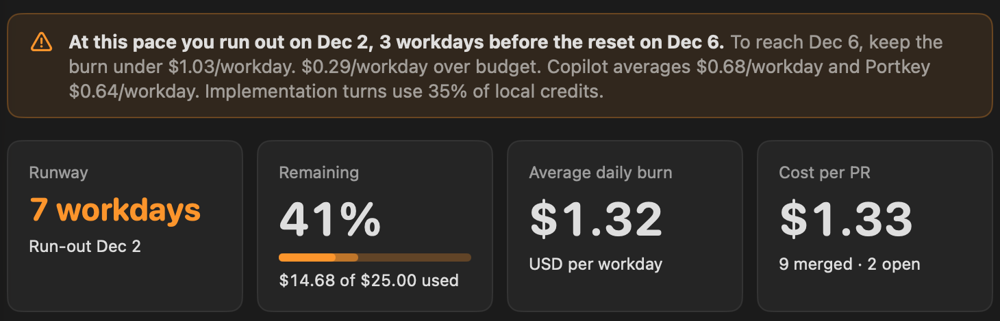
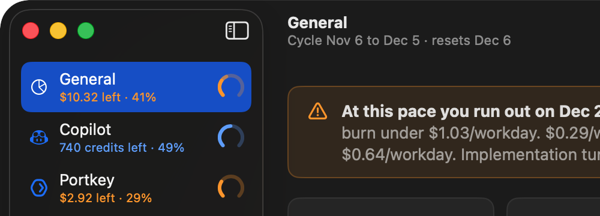
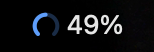

macOS menu bar app for GitHub Copilot
Know when your Copilot credits run out.
The menu bar shows the percent of credits left and the days until they run out at your current pace.
brew install --cask wilsonfaustino/tap/copilot-runway

"At this pace your credits last past the reset on Nov 30,
with 9 credits a day of headroom."
One sentence, updated every 5 minutes. Burn too fast and it gives the run-out date, while you can still change how you work.


Dashboard
A General tab, plus Copilot and Portkey tabs for the data you have, with spend by task, model, agent and project, and the top Copilot sessions.

Menu bar
Percent left and days of runway, like 48% · 12d. Orange when you will run out before the reset.

Popover
Run-out date, daily burn, credits per PR and per model. Share it as an image. Homebrew installs can update from it.
Portkey
Pi, omp and OpenCode sessions through Portkey show in USD. Set a monthly budget to see their runway. Portkey also works without Copilot.
Settings
Show credits left or spent, count only weekdays, mark days off, and get notified when the runway gets short.
See where the credits went.
The Copilot tab splits credits by project and lists the top sessions. Labels show a date, agent, model and task, never your prompts.

No setup
It reads your gh login and the local OpenCode, Pi, omp, Copilot CLI and Copilot app sessions. Open it and the numbers are there.
- macOS 26 (Tahoe) or later
- For Copilot:
ghlogged in and a usage-based Copilot plan - Or Portkey alone: local Portkey requests or a Portkey budget
- Notarized from 1.0.0. Older versions need "Open Anyway" in Privacy and Security.
Local only. No telemetry.
No backend. The app's own network calls go only to api.github.com, and your gh token stays in memory for one request. Session files stay on your Mac, and the app does not decode or keep prompt or answer text.
See your runway in a minute.
brew install --cask wilsonfaustino/tap/copilot-runway
Free and open source (MIT). Latest release.